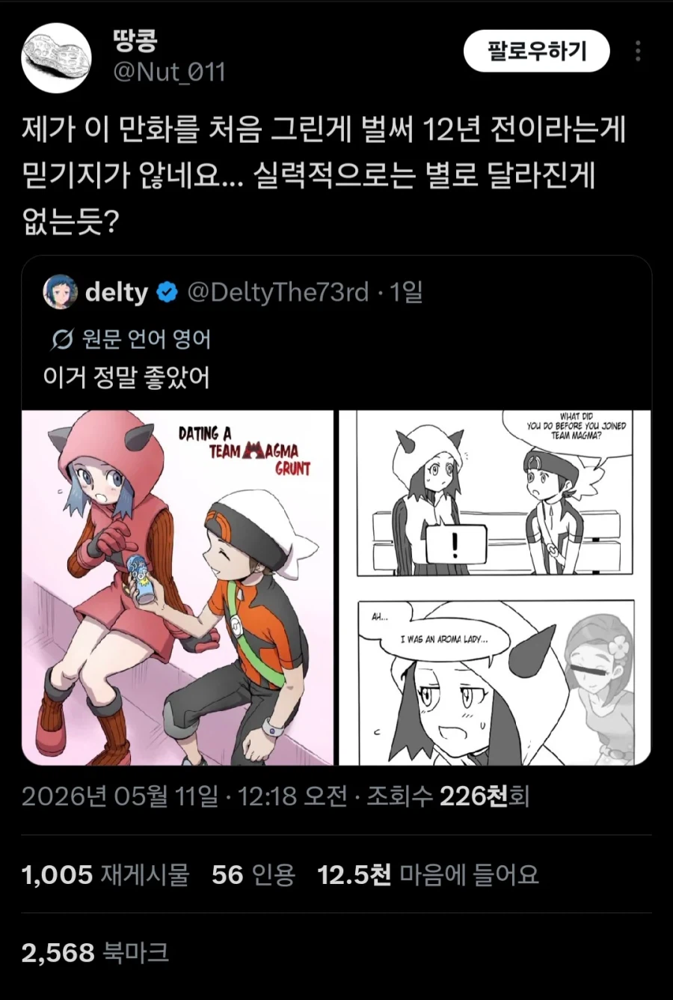
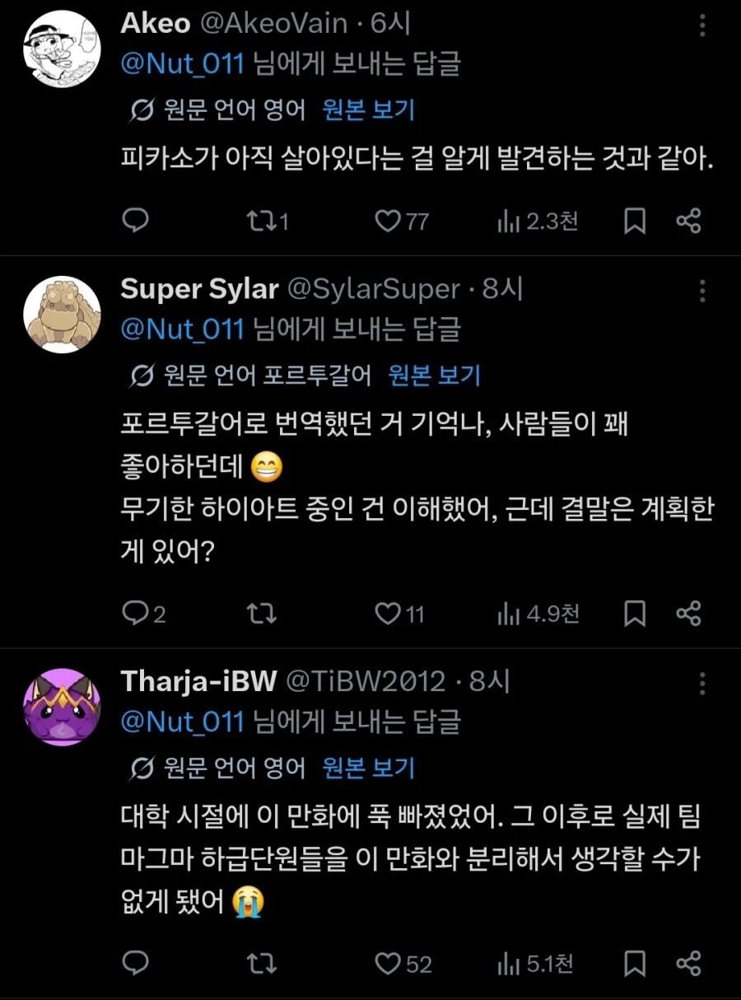

작가 대표작:여고생 드래곤, 용사생활기록부
눈을 떠라 구버맨! 코로니x루카리오 역포간물과 포켓몬 캐릭터 BBW화를 그리던 시절 너는 더 빛나고 있었다!


작가 대표작:여고생 드래곤, 용사생활기록부
눈을 떠라 구버맨! 코로니x루카리오 역포간물과 포켓몬 캐릭터 BBW화를 그리던 시절 너는 더 빛나고 있었다!
마그마단 조무래기랑 사귀는만화
순애물이 쥑여줌 ㅋㅋㅋ
그란돈 꺼내는 그 만화 맞냐
맞는듯?
뭔데?
monday
이시대 체고의 작가 땅콩은 루카리오 만화를 그린적이 ㅇ벗다!
텅비드엄마 개추
구버맨 시발아 조무래기 엔딩은 내달라고
ㅅ발 마지막줄 대체 뭐임. 저런 단어의 나열이 왜 문장이 되는거지? 내가 뭘읽은거야
임신도 함
저거 달달해서 찾아다닌거 생각나네
루리웹인가 거기서 연재했던 것 같은데 ㅋㅋ 재밌었음
포간물 그리던 구버맨은 죽었다 그만 놓아줘라...
내 마음속에 살아간다!!!
텅비드 엄마!
포켓몬 검투사인줄 알았는데
당연히 포켓몬 검투사인줄 알았는데
루카리오랑 포간 해서 임신한 만화 그린 놈이잖아!
뭔데?